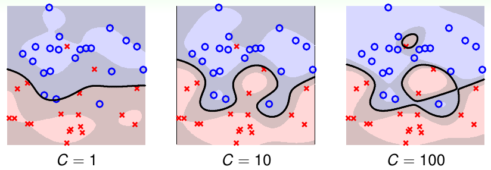

《机器学习技法》系列课程（四）
本章将引入Soft-Margin SVM以解决overfit问题，提高对错误点的忍受程度！
Motivation and Primal Problem
上一节中，我们得出SVM仍然会发生overfit，其原因包括两个方面：
- 模型的复杂度过高，学习能力太强！
- 模型要求必须没有错误点，必须将所有数据正确区分。
然而，我们看一个例子：

如果我们一定要求要将所有的点正确分开，那么我们就必须选择一个4次的特征转换（右图）。然而，实际上图一的一次特征转换得到的分类结果更好，尽管里面有很少量的点没有正确区分。
现在我们回忆我们之前所学的内容：当我们第一次接触PLA算法，遇到不能线性分开的数据是怎样处理的？我们使用的是Pocket，尽管我们不能找到一个将所有点都正确分开的超平面，但是我们可以选择一个犯错最少的。我们可以将这种思想和我们一直使用的hard-margin SVM结合，得到一种能够忍受一些错误点的soft-margin SVM：
我们对上述conbination的表达式稍做变形：
这是我们所需要的soft margin svm的一种表达形式，其中，对于正确的点，满足约束条件，而对于错误的点，由于右侧有负无穷，所以约束条件仍然成立。为了平衡min中两项的权重，添加了C系数。然而，上述计算式中含有bool计算项，此时就不是一个线性的表达式了，也因此，这个SVM问题不能使用QP来计算。同时，上述表达式尽管可以处理错误点，但是不能区分是一个大错误还是小错误（和正确边界距离大小），因此我们添加一个参数ξn来解决这个问题，并将表达式化简如下：
我们使用ξn来描述犯错的程度，其中ξn >= 0，ξn越大表示犯错越大。而对于参数C，越大表示我们需要的分类界面越瘦，因为此时需要忍受更少的错误，而C越小则得到的分类界面越胖（能够忍受更多的错误）。
下面将引入对偶。
Dual Problem
类似于我们在Dual SVM中讲解的内容，对于我们已经得到的soft-margin svm，它的复杂度仍然依赖于Z空间的复杂度d~，此时我们要去除这个复杂度，因此我们要引入对偶。而引入对偶我们使用了一个重要的工具是拉格朗日乘数法，因为在soft margin svm中我们又新引入了一个参数，且对它有新的约束：大于等于0，由此，我们的拉格朗日乘数就变为了：αn和βn:
同样类似于我们学过的Dual SVM的推导，我们的问题继续化简：
根据梯度下降法，最小值点在梯度为0处，我们分别对参数求偏导数，令其结果为0。首先处理ξn:
此时可将原问题化简为：
现在这个形式和我们的hard-margin svm类似，我们分别对b和w求偏导数，令其为0：
最终得到soft margin svm的dual形式：
现在我们可以使用QP解决该问题！
Messages behind Soft-Margin SVM
现在我们可以利用QP解决soft margin svm：
大部分内容和hard-margin问题是相同的，并且它的灵活性更强。但是我们还需要考虑如何求解b这个问题。
如上图，我们求解hard-margin svm问题，由互补松弛条件，我们找到一个支撑向量就能求解b。而对于soft-margin svm，同样存在这个条件，区别是它的条件有两个。如果我们找到了一个支撑向量，此时并不能计算出b。我们根据第二个条件，如果令C和αn不相等，则ξn=0，此时我们可以计算b。我们把0 < αn < C的点称为自由支撑向量(free SV)。
因此我们也可以引入核函数：
那么我们该怎样选择C的大小呢，我们看一看使用高斯核函数的soft-margin svm使用不同的C的效果：

C越大，分类界面越瘦，对噪音的容忍程度越低 - 发生了overfit！因此我们的svm现在仍然会发生过学习，所以在选择参数的时候必须要仔细！
最后我们看一看αn的物理意义是什么。我们已知它满足两个条件：
根据这个条件，我们将考虑3种不同情况：
- αn = 0，此时ξn = 0，其表示该点不是SV，点大部分落在正确的一侧。
- 0 < αn < C，此时点在分类界面的边界上。
- αn = C，此时ξn表示犯错的程度（偏离margin），这些点可能在margin中负方向，也可能在margin上。
我们根据αn可以判断数据相对于margin的分布位置。
Model Selection
我们仍然需要进行模型选择，使用Validation是一种很好的方案。
- Cross Validation
我们可以使用Cross Validation来选择模型，然而由于它不是连续的函数，从而难以优化！我们可以选择不同参数的组合来选择模型，选择Evc最小的模型。 - Leave-One-Out CV
- use #SV
SV的数量也很重要，然而这个问题也是难以优化的。一般来说SV越多，模型更复杂，也就更容易overfit，选择SV较少的！
文章内容和图片均来自“国立台湾大学林轩田老师”的《机器学习技法》课程！
— END —